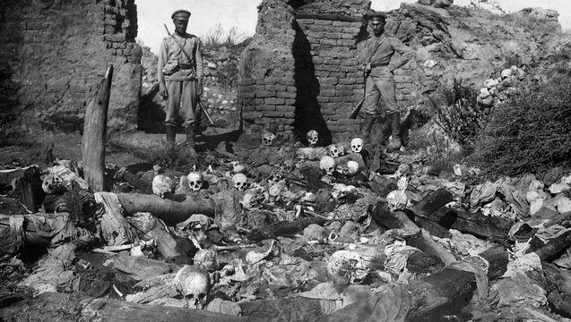
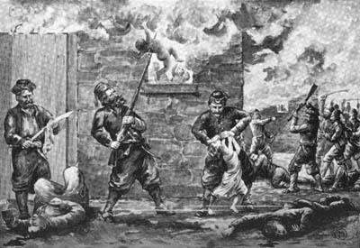
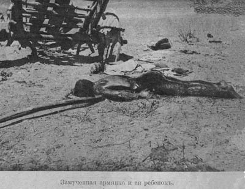

IF YOU CAN SEE THIS TEXT, YOU NEED TO ENABLE JAVASCRIPT FOR MANY FUNCTIONS OF THIS SITE
The Ottoman Empire during World War I were fighting various groups around their borders, but would also commit war atrocities that no other nation did during World War 1. Many civilians died during WW1, but the Ottomans would commit massacres against various populations. The Greeks, Assyrians, and Armenians. The Greeks that lived in the Ottoman Empire were located on the coasts of modern day Turkey. They were killed, deported and many Greek Orthodox churches were destroyed and even some greek towns were destroyed. Total deaths range from 500,000-900,000 and this was from 1914-1918.
 The Assyrians and Armenians would suffer a lot more. Both groups had different religious believes of the core Ottomans, and were minorities. The Ottomans targeted the Assyrians in Mesopotamia and would kill entire villages and destroy property with a total of of around 250,00 Deaths, this is an estimate that varies. The Armenians on the other hand would suffer massively. 1.5 Million Armenians would be dead by end of the war, and would be considered the first massacre to use the word genocide. Many Armenians were stripped of their clothes and were sent on death marches into the desert of Syria, while others will killed outright. The worst part of these massacres besides the deaths, is the fact that Turkey ignores and denies that these events happens. Today Turkey still denies both of these genocides against its own people.